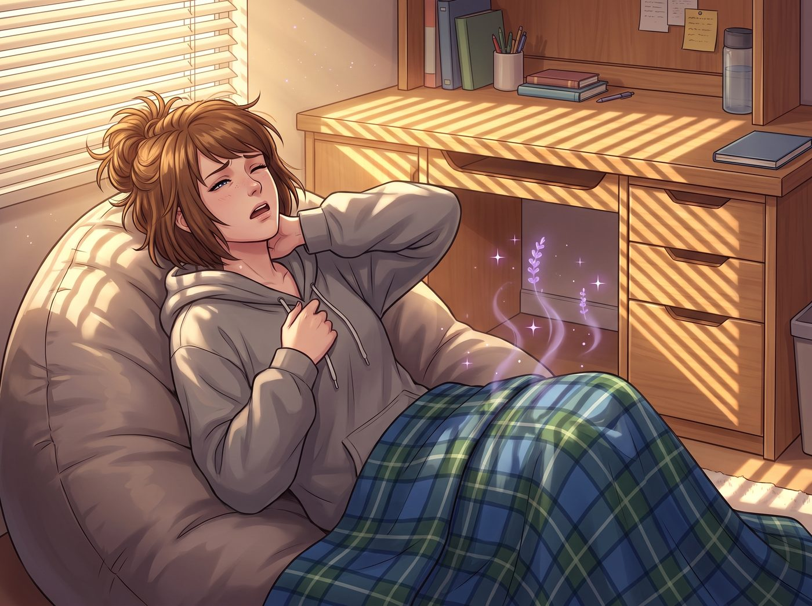

首席情緒穩定官（倒敘）

第二天早上，波特蘭難得迎來了一個沒有下雨的晴天。
陽光透過百葉窗，呈條紋狀灑在ArtHouse新生宿舍那張一塵不染的書桌上。躺在懶骨頭沙發上的Max痛苦地呻吟了一聲，揉著因為睡姿不良而痠痛的脖子，緩緩睜開了眼睛。
她發現自己身上蓋著一條疊得方方正正、散發著薰衣草洗衣精香味的法蘭絨毯子。而房間的主人Lily顯然已經起床了，浴室方向傳來微弱的水聲。
一、強迫症的展覽館
喝夠了濃縮咖啡、昨晚又奇蹟般睡了個好覺的Max，此刻大腦裡的大四鹹魚模式已經解除，取而代之的是攝影系學生的敏銳，以及被好友Chloe傳染的那種街頭好奇寶寶屬性。
「讓我來看看，一個把學生手冊當聖經背的十八歲大一新生，房間裡到底藏著什麼秘密……」Max掀開毯子，赤著腳在乾淨得幾乎能反光的地板上溜達起來。
這房間簡直就像是某種強迫症的展覽館。所有的筆都按照筆尖的粗細和顏色光譜排列；書架上的教科書不僅按首字母排序，甚至還用書籤標註了每天的閱讀進度。
但很快，Max的目光被書桌上方的一塊軟木板吸引了。
在那塊軟木板的正中央，用四顆不同顏色的圖釘嚴格對齊四角釘著一張用Excel製作、並用彩色雷射印表機列印出來的表格。表格的標題用加粗的黑體字寫著：《PNCA大一秋季學期：社會化與適度叛逆時間表（修訂版v1.2）》。
Max挑了挑眉，湊近一看，差點當場笑出聲。
表格裡的內容，精確且荒謬到了極點：週五二十點到二十點四十五分，進行垃圾食品攝取，配額為一片帶有額外油脂的義大利辣香腸披薩，備註需提前準備兩片健胃仙以防胃酸逆流；週六二十一點到二十一點半，體驗亞文化聽覺刺激，播放某龐克樂團的音樂，音量控制在宿舍噪音管理條例允許的臨界點，時長不可超過三十分鐘以免影響深度睡眠週期；週日十五點，穿著帶有骷髏圖案的黑色T恤去圖書館，外面需套上米色針織衫，以備遇到教授時隨時遮擋。
「我的天哪……」Max捂住嘴，肩膀已經開始不受控制地劇烈抖動。這大概是她這輩子見過最硬核、最官僚主義的叛逆了。
二、被編入體系的毛絨玩具
但驚喜還沒結束。
Max的視線下移，落在了書桌邊緣的一個小木架上。那裡整整齊齊地坐著一排小毛絨玩具。
如果只是普通的毛絨玩具就算了，但Max驚恐地發現，每隻小動物的脖子上，都掛著一個用護貝膠膜精心製作的微型員工識別證。
排在最前面的是一隻戴著領結的棕熊，識別證上寫著：「Mr. Fluffers，首席情緒穩定官。職責：在期中考期間提供深壓覺安撫。」旁邊是一隻毛茸茸的垂耳兔：「Agent Carrot，睡眠監督執行長。職責：確保晚上二十二點半準時熄燈。」最邊緣還有一隻小刺蝟：「防禦與邊界感測試員。職責：對抗社交過載。」
「噗——咳咳咳！」Max終於忍不住了，她捂著肚子，笑得彎下了腰，連眼淚都快飆出來了。
三、生氣臉的炸毛
就在這時，宿舍的門鎖傳來轉動的聲音。Lily穿著整潔的睡衣，手裡抱著一個裝著牙刷和洗面乳的塑膠洗漱籃，剛從公共浴室回來。
她一推開門，就看到Max正站在她的軟木板和情緒支援董事會面前，笑得像個發瘋的土撥鼠。
時間在這一刻彷彿靜止了。
十八歲的Lily愣在原地。三秒鐘後，一種名為社會性死亡的紅暈，以肉眼可見的速度從她的脖子根一路蔓延到了耳尖。
她還沒有進化成那個在未來能用行政合規把特警嚇跑的腹黑魔王。此刻的她，只是一個隱私被高年級學姐看光的、極度要面子的大一新生。
「Max學姐！！！」
Lily發出了一聲完全失去平靜的尖叫。她猛地把洗漱籃扔在床上，像一隻護食的小貓一樣衝了過去，一把用身體擋住了軟木板和那排毛絨玩具。
她的臉紅得像一顆熟透的番茄，嘴巴不受控制地嘟了起來，腮幫子鼓得圓圓的——這副炸毛的樣子，簡直和Blackwell學院時期生氣的Kate Marsh如出一轍，毫無殺傷力，甚至有些過分可愛。
「請……請不要看那個！那是個人機密檔案！」Lily結結巴巴地抗議著，雙手在身後胡亂地揮舞，試圖把那張表格扯下來。
四、擬人化職責錨定
「哈哈哈哈！對不起，Lily，我不是故意的……」Max笑得眼淚都出來了，她指著那隻棕熊，「但是……首席情緒穩定官？妳連抱個娃娃都要給它發工資嗎？」
「這……這叫擬人化職責錨定！」Lily紅著臉，試圖用她那套還不太成熟的行政邏輯來挽回尊嚴，「心理學研究表明，將情緒需求具象化分配給實體物件，可以有效提升壓力管理的效率！這是一項非常嚴謹的自我管理系統！」
「那妳的適度叛逆時間表呢？」Max抹了抹眼角笑出的淚水，故意逗她，「今天可是星期五，學妹。妳準備好晚上八點去面對那片帶有額外油脂的披薩了嗎？需要我幫妳打911叫救護車嗎？」
「那……那是因為青春期大腦需要一定程度的邊界突破，來完成神經突觸的修剪！」Lily氣得跺了跺腳，那副圓框眼鏡都隨著她的動作晃了一下，「我只是把這個過程量化了而已！妳這是在嘲笑一個合法的成長計畫！」
看著這個急得快要哭出來、拼命用學術名詞掩飾尷尬的十八歲少女，Max突然覺得心裡某個被畢業焦慮填滿的角落，被一種奇妙的溫暖融化了。
她笑著走上前，不顧Lily的反抗，輕輕揉了揉她那頭柔順的頭髮。
五、今晚的邀約
「好了好了，我不笑了。首席情緒穩定官和妳的叛逆計畫都非常棒。」Max溫柔地說道，然後看了一眼桌上那杯昨晚帶來的、已經徹底冷掉的咖啡。
「不過，為了獎勵妳昨晚收留我這條大四鹹魚……」Max挑了挑眉，露出一個專屬於學姐的狡黠笑容，「今晚八點，我帶妳去吃真正的辣香腸披薩。沒有健胃仙，音量絕對超過六十五分貝，而且吃完我們還要去街角那家黑膠唱片店逛到十一點。」
Lily睜大了眼睛，彷彿聽到了什麼違背憲法的大逆不道之言。「十……十一點？！可是學生手冊建議的深度睡眠時間是……」
「在我的字典裡，沒有學生手冊。」Max帥氣地打斷了她，拿起自己的牛皮紙袋，「晚上見，叛逆的小學妹。記得帶上妳的防禦刺蝟。」